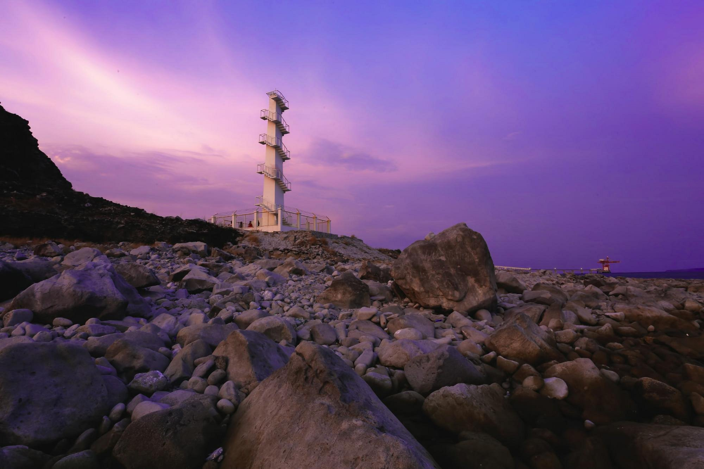
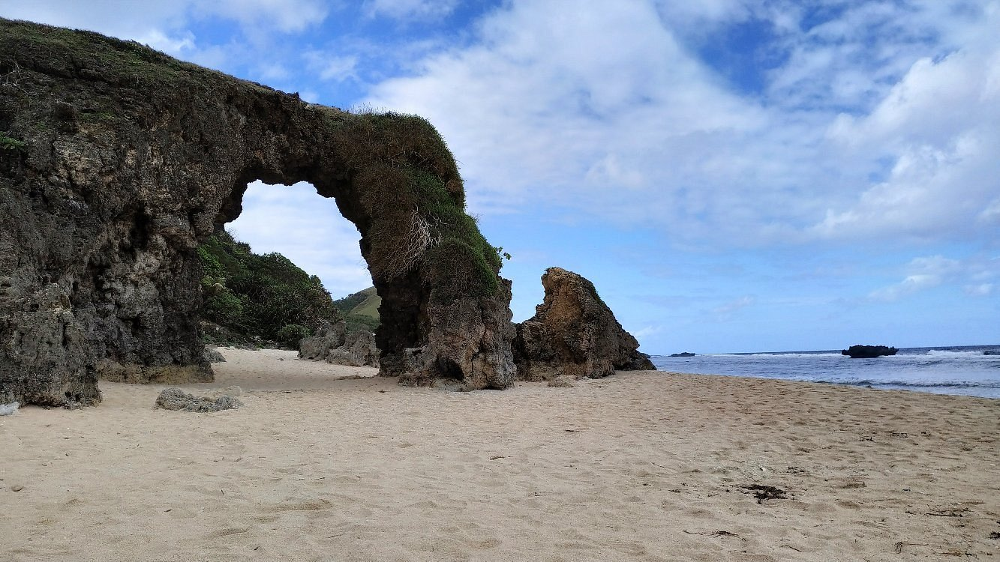

Mariveles
Sisiman Bay & Lighthouse
Iconic coastal view with rugged rock formations and a historic lighthouse. A perfect spot for sunset viewing and photography.

Morong
Morong Beaches
Home to the pristine Playa La Caleta and Panoypoy Cove. Experience the serene shoreline and crystal clear waters of Bataan.

Mariveles
Mariveles Coastline
The gateway to Five Fingers Cove and famous cliff-diving spots for the ultimate adventure seekers.